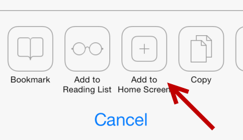
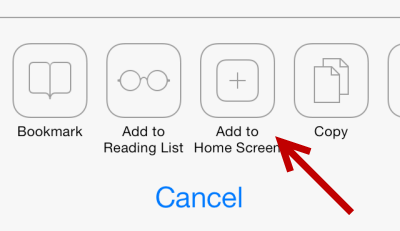
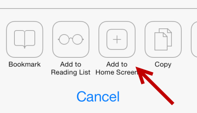
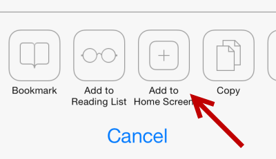

Sembra che tu non abbia installato l'app sul tuo telefono.
La procedura non è complicata! Premi il tasto Condividi sotto al centro Poi "Aggiungi a Home" ed infine "Aggiungi"

Poi "Aggiungi a Home" ed infine "Aggiungi"

Poi "Aggiungi a Home" ed infine "Aggiungi"

Poi "Aggiungi a Home" ed infine "Aggiungi"
